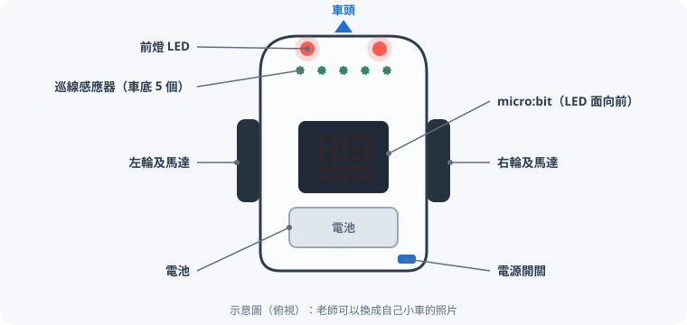
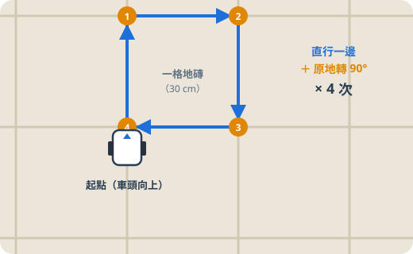
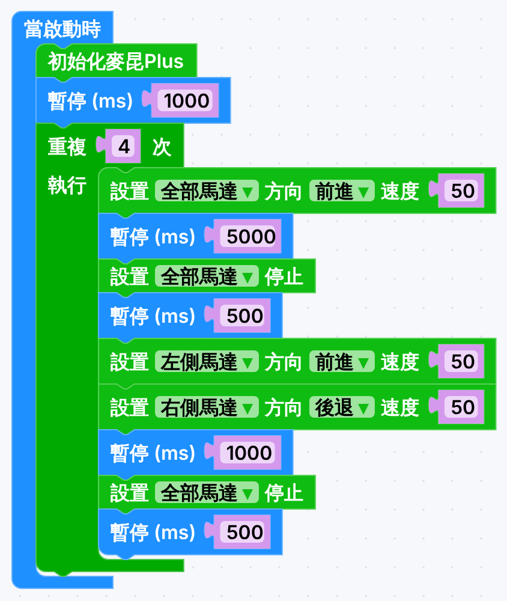
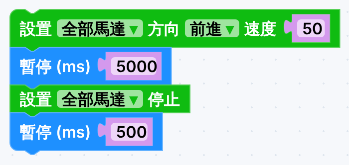
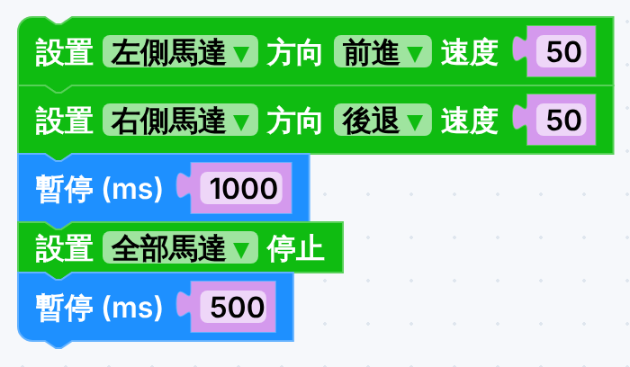
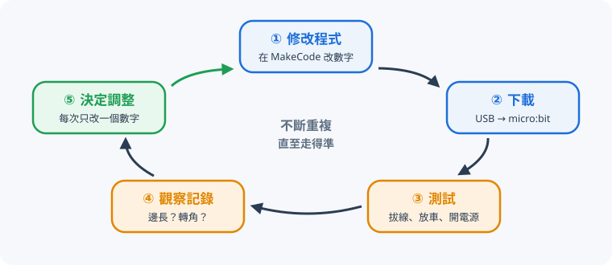
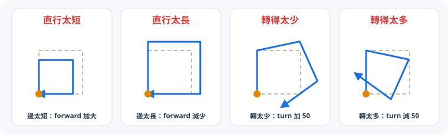

開始之前
完成今課後，你能夠：
- 把「走正方形」拆成直行、停頓、轉彎、重複四部分，並說出每部分的作用。
- 把程式下載到 micro:bit，並安全地測試小車。
- 用「測試 → 觀察 → 調整 → 再下載」的方法，每次只改一個數字，令小車走得準。
本課滿分 50 分。選擇題以第一次作答計分，之後可以再試，是為了學習。答案會自動儲存在這部電腦。
準備：認識小車和 MakeCode
今次任務用 MakeCode 積木編程，令麥昆 Plus V2 小車沿一格地磚走出一個正方形：起點和終點大致相同，車頭轉回原來方向（共轉 4 次 90°）。

器材
- 每組：麥昆 Plus V2 小車、micro:bit、USB 線、電池各 1
- 電腦（Chrome 或 Edge）、軟尺、紙膠帶
小組分工（每下載一次就輪換）
編程員改數字、下載程式
測試員放車、開關電源
記錄員觀察、量度、填記錄表
安全主任看守路線，提醒同學站開
1開啟 MakeCode，建立新專案
- 用 Chrome 或 Edge 開啟
makecode.microbit.org，按「新專案」。 - 專案名稱：
班別_學號_square（例如1A_12_square）。
2加入麥昆 Plus 擴展
- 在積木清單最下面按「擴展」。
- 整條貼上：
https://github.com/DFRobot/pxt-DFRobot_MaqueenPlus_v20，按 Enter。 - 選 maqueenPlusV2。成功後多了 3 組積木：IR、矩陣激光測距、麥昆Plus V2&V3。
擴展是跟專案的：每個新專案都要再加一次。
3今次要用的積木
| 積木 | 指令群 | 作用 |
|---|---|---|
| 當啟動時 | 基本 | 開機或按 reset 後執行一次 |
| 暫停 (ms) 100 | 基本 | 等待多少毫秒（1000 ms = 1 秒），馬達會保持上一個動作 |
| 重複 4 次 | 迴圈 | 同一組動作做 4 次 |
| 初始化麥昆Plus | 麥昆Plus V2&V3 | 每個程式開頭都要加，令 micro:bit 和小車連接 |
| 設置 全部馬達 方向 前進 速度 50 | 麥昆Plus V2&V3 | 控制左、右或全部馬達的方向和速度（0–255） |
| 設置 全部馬達 停止 | 麥昆Plus V2&V3 | 停車 |
速度一律用 50拉出馬達積木時，速度預設是 100，記得每一塊都改成 50。100 太快：起步和停車時車輪容易打滑、衝過頭，每次走法都不同，也較危險。
最重要的概念馬達積木不會自己停！「前進 3 秒」＝ 設置馬達前進 → 暫停 3000 ms → 設置馬達停止，三塊積木一組。
拆解正方形程式
8 分正方形看似複雜，其實只是同一個動作做 4 次：直行一條邊，停一停，轉 90°，再停一停。


逐部分看
| 部分 | 積木 | 作用 |
|---|---|---|
| A 準備 | 初始化麥昆Plus → 暫停 1000 | 連接小車；開電源後等 1 秒才起步，讓測試員有時間縮手。 |
| B 直行一條邊 | 全部馬達 前進 50 → 暫停 5000 → 全部馬達 停止 | 兩個輪一起向前。暫停的時間決定走多遠：時間越長，邊越長。 |
| C 中間的停頓 | 暫停 500（緊接「停止」之後） | 小車有慣性，停車後仍會滑一點。等它完全停定才轉彎，轉角才會準；轉完也停一停，才開始下一條邊。 |
| D 原地轉 90° | 左側 前進 50 → 右側 後退 50 → 暫停 1000 → 全部馬達 停止 | 兩輪方向相反，小車繞兩輪中間打轉（差速轉向）。暫停的時間決定轉多少度。 |
| E 重複 4 次 | 重複 4 次包住 B、C、D | 正方形有 4 條邊、4 個角。不用抄 4 次積木，改數字時也只需改一處。 |


只有兩個數字要調整直行的暫停時間控制邊長；轉彎的暫停時間控制角度。其他數字（速度 50、停頓 500、等 1000）保持不變。
練習 1：每部分做什麼？8 分
先在模擬器試
8 分在模擬器砌出上面的程式（記得速度改成 50），按「▶ 執行」。模擬器也是一個小循環：執行 → 看結果 → 改一個數字 → 再執行。結果欄會告訴你每邊大約多長、每次大約轉多少度。
模擬小車和真車一樣有誤差，而且每位同學的小車都有少少不同。模擬器過關後，真車仍然要再試——數字通常不會一樣。
把程式下載到 micro:bit
5 分在 MakeCode 砌好程式後，要把它「寫入」micro:bit，小車才會照着做。每改一次數字，就要重新下載一次。
下載時把小車的電源關掉，車放在地上，不要放在桌邊——程式一寫入，開電源小車就會衝出去。
1接上 USB 線
- 確認小車電源是 OFF。micro:bit 可以留在車上（LED 面向前）。
- USB 線一端接電腦，另一端接 micro:bit 頂部的 USB 插口。micro:bit 背面的黃燈會亮起。
2第一次：配對 micro:bit（只需做一次）
- 在 MakeCode 按「下載」旁邊的「⋯」→「連接裝置」。
- 按「下一步」，在彈出的清單選 BBC micro:bit CMSIS-DAP，再按「連接」。
- 成功後，「下載」按鈕旁邊會出現 USB 圖示。之後每次按「下載」，程式就會直接寫入 micro:bit。
配對不到？改用拖放方法
- 按「下載」，瀏覽器會儲存一個
.hex檔（例如microbit-1A_12_square.hex）。 - 開啟「檔案總管」，左邊會見到一個叫 MICROBIT 的磁碟機。
- 把
.hex檔拖到 MICROBIT 磁碟機。黃燈閃完，MICROBIT 磁碟機會自動彈出再出現，這是正常的。
3按「下載」，等黃燈停止閃動
- 按左下角紫色的「下載」按鈕。
- micro:bit 背面的黃燈會快速閃動，表示正在寫入；停止閃動就完成（約 10 秒）。
- 閃動期間不要拔線，否則要重新下載。
4拔掉 USB 線，把車放在起點
- 拔掉 USB 線（小車用自己的電池行走）。
- 把小車放在地磚的一角，車頭對正磚縫，左輪貼着磚縫。
- 用紙膠帶在車頭和車側貼一個記號：每次都放回同一位置，結果才可以比較。
5開電源，縮手站開
- 測試員開電源，立即縮手。程式由頭開始：初始化 → 等 1 秒 → 起步。
- 小車走完會自己停下。想再看一次：關電源，放回起點，再開電源（或者按 micro:bit 背面的 reset 鍵）。
用 iPad？
iPad 不能用 USB 下載。請用「micro:bit」app：先用藍牙配對 micro:bit（按住 A+B 再按 reset，見到圖案後依 app 指示），然後在 app 內開啟 MakeCode 專案並按「Flash」傳送。
練習 2：下載和測試的正確次序5 分
測試 → 觀察 → 調整 → 再下載
14 分第一次下載，小車幾乎一定不會走得準——這很正常。工程師的做法是不斷重複下面的循環，每次都令結果好一點：

觀察：記錄員要看什麼？
- 第一條邊停在哪裏？用軟尺量小車走了多少 cm，和地磚邊長比較。
- 第一個轉角後，車身和磚縫平行嗎？平行就是剛好 90°；車頭未轉夠是「太少」，轉過了是「太多」。
- 最後停在哪裏？量一量離起點多遠，車頭是否回到原來方向。

看得更清楚的方法先把「重複 4 次」改成「重複 1 次」：小車只走一條邊、轉一個角，觀察更快更準。調好兩個數字後，才改回 4 次走完整個正方形。
調整：改哪個數字？改多少？
| 觀察到 | 改哪個數字 | 改多少 |
|---|---|---|
| 邊太短／太長 | 直行的暫停時間 | 用比例計：新時間 ＝ 舊時間 × 地磚邊長 ÷ 實際走了多少。例：5000 ms 走了 50 cm，地磚 60 cm → 5000 × 60 ÷ 50 ＝ 6000 ms |
| 轉得太少／太多 | 轉彎的暫停時間 | 每次 ±50 ms；差不多時改為 ±20 ms，慢慢逼近 |
| 每次結果都不同 | 先不要改數字 | 檢查：速度是否 50？有沒有中間的停頓？電池夠電嗎？每次是否放回同一位置？ |
每次只改一個數字如果同時改了兩個數字，走好了或走差了，你都不知道是哪一個的功勞。建議先調好直行（邊長），再調轉彎（角度）。
練習 3：觀察到這樣，應該怎樣調整？6 分
真車試驗記錄表8 分
每下載一次就填一行。填入兩個數字、量到的邊長和轉角情況，最後一欄會建議下一次只改哪一個數字。至少完整記錄 3 次。
cm
除錯（Debugging）
| 現象 | 可能原因 | 解決方法 |
|---|---|---|
| 完全不動 | 電源未開、電池弱、micro:bit 未插好 | 開電源、換電池、重新插好 |
| 下載了卻沒反應 | 忘記「初始化麥昆Plus」；下載未完成就拔線 | 在「當啟動時」第一行加上它；重新下載，等黃燈停閃 |
| 改了數字但走法一樣 | 改了之後忘記下載 | 每改一次都要再按「下載」 |
| 只有一邊車輪轉 | 直行時用了「左側／右側馬達」 | 直行要選「全部馬達」 |
| 一直向前不停 | 忘記「暫停」或「停止」 | 每個動作後補上暫停 ＋ 停止 |
| 衝得太快、轉角時打滑 | 速度仍是預設的 100 | 每塊馬達積木都改成 50 |
| 越走越歪 | 左右馬達力度不同、電池弱 | 快的一邊速度調低（50 → 45），或換電池 |
老師驗收及自我檢查
12 分真車走得準了，就請老師來看一次完整的正方形。
自我檢查2 分
挑戰（做得快的同學，不計分）
- 三角形：改成走正三角形。每次要轉多少度？「重複」要改成幾次？
- 變數：建立變數
邊長時間和轉彎時間，之後只改一個數字就能調整整個程式。 - 大正方形：走 2 × 2 格地磚的大正方形，只准改一個數字。
- 提示燈：每轉完一個角，就在 LED 顯示 1、2、3、4，或者開前燈一下。
總結、詞彙及學習日誌
3 分- 複雜的動作可以拆解成簡單的部分：直行、停頓、轉彎，再用迴圈重複。
- 馬達積木不會自己停：動作 → 暫停 → 停止，三塊一組；動作之間的停頓令結果更穩定。
- 程式很少一次就對：測試 → 觀察 → 調整 → 再下載，每次只改一個數字。
- 今次的小車只靠計時走正方形，它不知道自己走成怎樣——這叫開環控制。下一課會加上感應器。
| 中文 | English | 中文 | English |
|---|---|---|---|
| 程式 | Program | 迴圈 | Loop |
| 下載 | Download | 除錯 | Debugging |
| 試驗與修正 | Trial and error | 差速轉向 | Differential steering |
| 慣性 | Inertia | 開環控制 | Open-loop control |
學習日誌（最少 20 字）
你們試了幾次才成功？哪一次的調整最有用？模擬器和真車的數字有什麼分別？
下一課預告巡線感應器：為小車加上「眼睛」，令它自己沿着黑線行走。
成績及交功課
繳交：下載成績報告（檔名例如 DT_F1_L2_1A_12_陳大文.html），連同 MakeCode 分享連結，上傳到 Google Classroom／eClass。